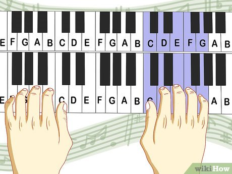

🎯 Learn the Basics
Start your journey by understanding how the piano works and learning the fundamentals: key names, finger positions, and posture.
🎵 Piano Key Names
The white keys are labeled A to G. The black keys are sharps (#) and flats (b). Start by identifying middle C.

✋ Finger Numbers
Each finger has a number: 1 (thumb) to 5 (little finger). Proper finger placement helps with speed and accuracy.

🪑 Proper Posture
Sit upright with relaxed shoulders, elbows slightly above the keys, and feet flat. Comfort improves performance.